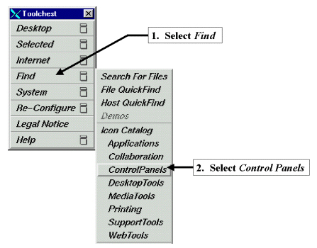
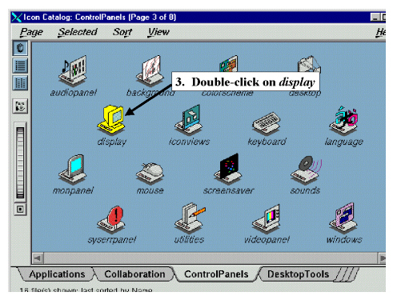
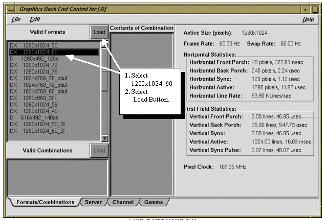

Illustration 4: TOOLCHEST MENUS

Illustration 5: DISPLAY SETTING THROUGH CONTROL PANELS

Illustration 6: LINE RATE WINDOW

If the Frame Rate and Swap Rate are NOT set to 60Hz continue at step 1 below.
If the Frame Rate and Swap Rate IS set to 60Hz, this section is complete. Select [File] and [Exit], Close the Toolchest Menu, Right click on the background, and from the drop down box select [Logout (yes)] and [reboot Signa]. Continue with Section 5- LCD Auto Adjustment and Screen Manager Operations.